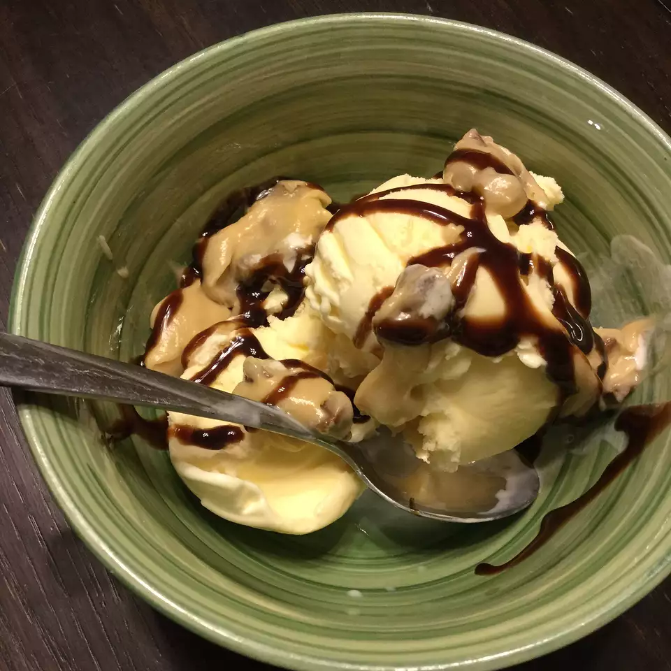

Donut

Description
Baked Buttermilk Donuts
It is crispy on the outside and light and airy on the inside!
Ingredients
- 1/2 cup all-purpose flour
- 2 1/2 tablespoons brown sugar
- 3 tablespoons white sugar
- 2 tablespoons butter, softened
- 1/8 tablespoon vanilla extract
- 2 tablespoons water
Steps
- In a medium bowl, mix together the brown sugar, white sugar, and butter until smooth
Stir in vanilla and water. Mix the flour until well blended. Shape into a loaf or
log, and freeze for 1 to 2 hours.
- Cut into small chunks, and mix into softened ice cream. Freeze for 15 minutes or
until firm before serving.